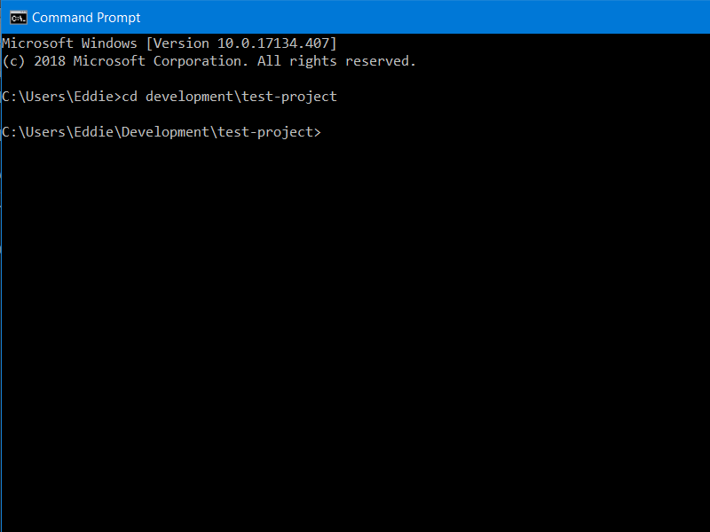
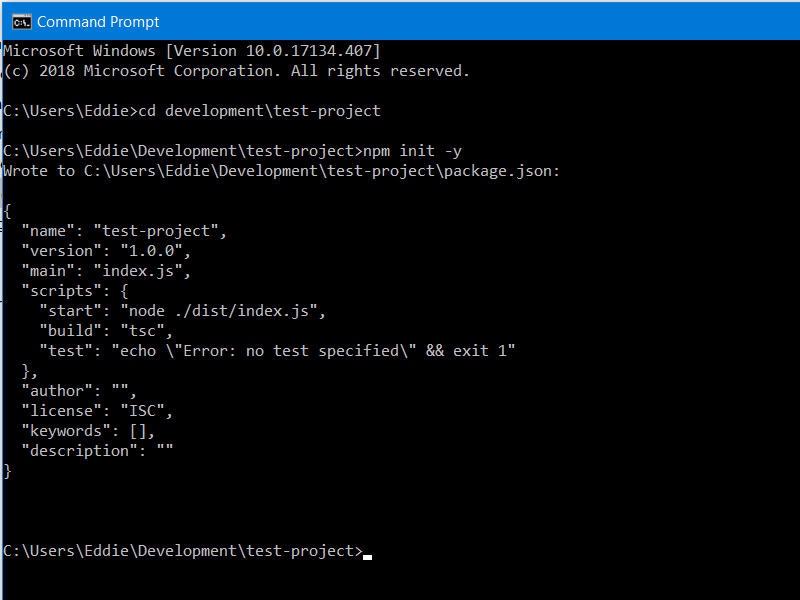
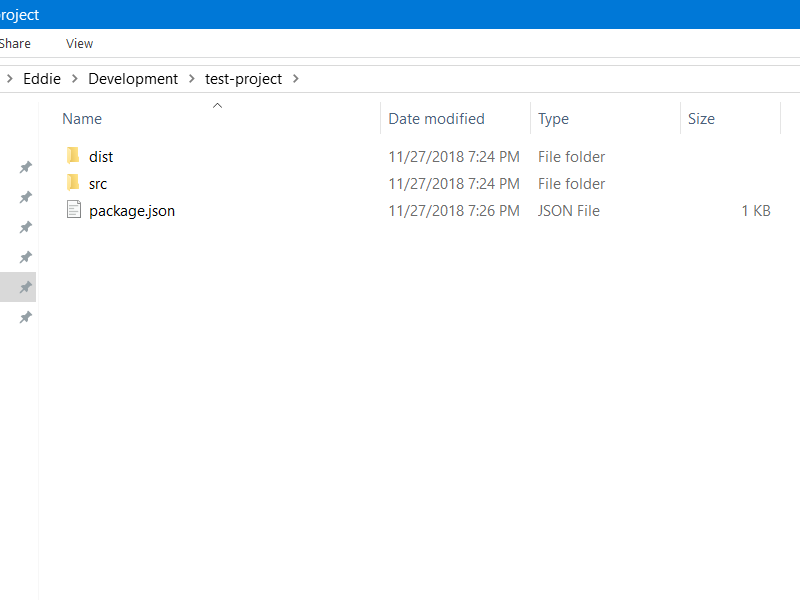
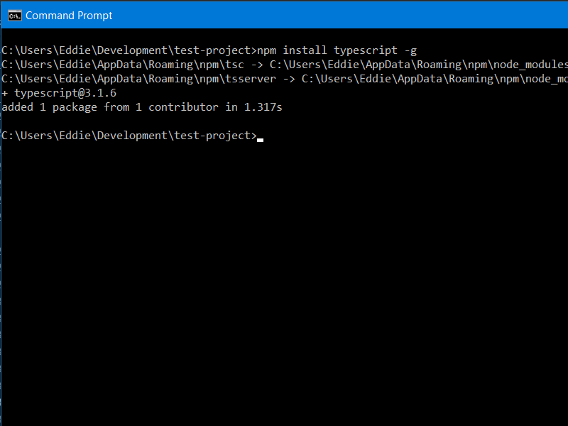
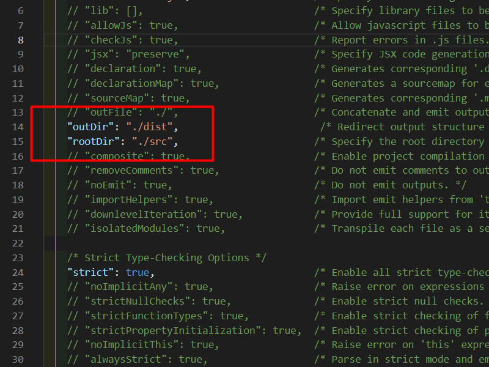
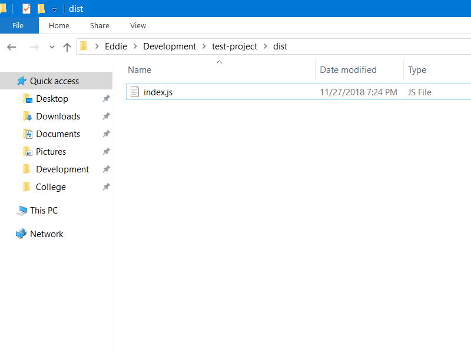

Summary
For beginners TypeScript is like the carrot on the end of the stick, always just out of reach no matter how hard you try. Everyone touts how it’s “JavaScript that scales”, and once you use it you’ll never go back. But finding a decent tutorial on how to set up a new TypeScript project is quite the challenge. Many tutorials are out-dated and want you to install other packages such as gulp, jump through hoops, or even sacrifice your first born child (okay maybe not but still).
This tutorial attempts to cover a no bs approach to setting up a new TypeScript project that builds and runs via npm run build, and npm start without any additional node modules. However, it does assume you have some familiarity with the command prompt, and node. If this were a medium article it would probably be titled “How To Set Up a TypeScript Project In 5 Minutes Or Less”.
Steps
1 - Create a new folder to hold the project. Then open up a command prompt and navigate to the newly created folder using the cd command. For this example we’ll be working in a test-project folder.

2 - Run the standard node initialization command npm init or if you want to accept the defaults for the questionnaire npm init -y

3 - Create two folders (dist, and src) within the project directory. The dist folder will be used to store our transpiled JavaScript files, and the src folder will hold all our TypeScript files. It’s in your best interest to keep the two seperated or else things will become cluttered fast. The project structure should now be:

4 - Open up the src folder and create a new index.ts file. This will be our very first TypeScript file.

5 - Open up index.ts, and write a classic hello world line. Save it, and close out.

6 - Now we need to install TypeScript globally. npm install typescript -g

7 - With TypeScript installed, we can run the init command: tsc --init

8 - You should see a tsconfig.json file in the project directory. Go ahead and open it up. We’ll need to un-comment the outDir and rootDir line. Then fill them out with the following values:

9 - Switch over to package.json and add a build command, and start command.

10 - With everything set up we can build the project. Enter npm run build in the command prompt.

If things went correctly it won’t print out anything, but we can see a new .js file under dist.

11 - Finally we can run it via the npm start command.

Success! The project runs our JavaScript file that we transpiled from TypeScript. From here I recommend checking out some of the settings available in the tsconfig file. This tutorial is merely skimming the surface of TypeScript, but should be enough to help get your feet wet. Happy coding!